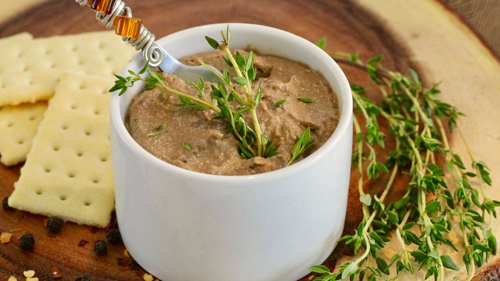

Chicken Liver & Whiskey Pate

Description
This chicken liver and whiskey pate will surely wow your dinner guests. We recommend serving on melba toast, or with crackers and cheese.
For best results, prepare the day before your dinner party.
Serves 6 people
20 mins to prep, 20 mins to cook, 8 hrs to chill
Ingredients
- 450g Chicken Livers, fat trimmed
- 220ml milk, full cream
- 8 tablespoons of cold butter, cut into sticks
<1i>1 small white onions, chopped
- 1tbsp crushed black peppercorns
- 3 cloves garlic
<1i>1 tbsp balsamic vinegar
- 1 tsp fresh time, roughly chopped
- 35ml whiskey of your choice
Method
- Combine chicken livers and milk in a bowl. Let soak in the refrigerator, about 2 hours.
- Melt 2 tablespoons butter in a saucepan over medium heat. Add onion; cook and stir until soft, about 5 minutes. Add 1 1/2 teaspoon black peppercorns, garlic, red pepper flakes, and thyme; cook and stir until fragrant, 1 to 2 minutes.
- Remove chicken livers from the milk with a slotted spoon; add to the saucepan with balsamic vinegar and bay leaves. Season with salt and pepper. Cook until chicken livers are tender and no longer pink, 10 to 12 minutes. Remove from heat and cool slightly, 5 to 10 minutes.
- Transfer chicken liver mixture to a food processor. Add remaining 1 1/2 teaspoons black peppercorns and Scotch; blend until smooth. Add remaining 6 tablespoons of butter and pulse until fully incorporated into the mixture.
- Divide blended mixture evenly among 6 porcelain ramekins. Cover with plastic wrap and refrigerate until firm, about 6 hours.